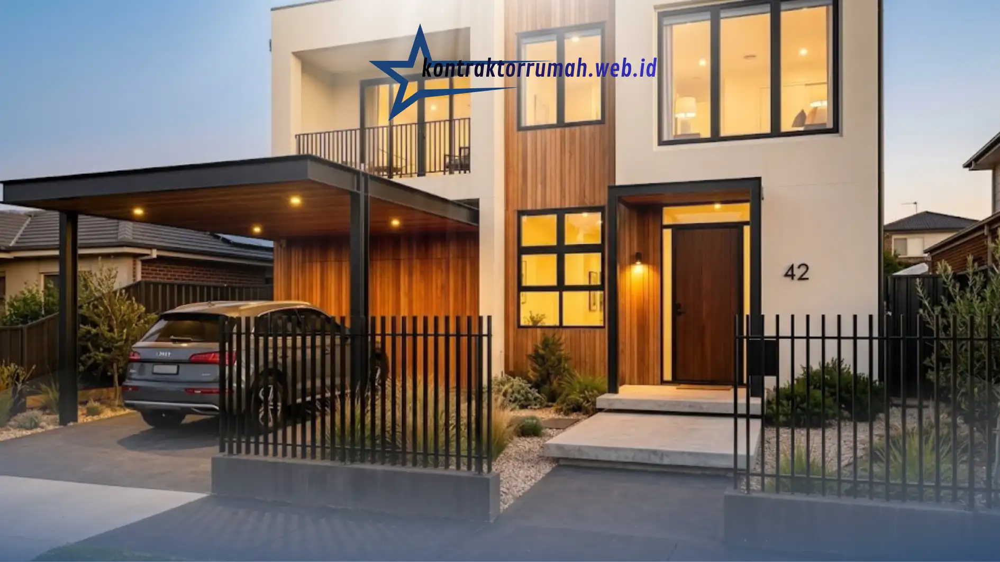

Desain rumah minimalis modern dengan kombinasi fasad kayu dan besi menjadi salah satu gaya yang semakin diminati karena mampu menghadirkan kesan hangat sekaligus industrial pada tampilan eksterior rumah. Perpaduan dua material ini menciptakan keseimbangan visual antara unsur alami dan modern yang cocok diterapkan pada berbagai tipe rumah tapak di kawasan perkotaan.
Poin Penting
- Kombinasi kayu dan besi menghadirkan kontras tekstur yang hangat sekaligus tegas, cocok untuk konsep rumah minimalis modern.
- Kayu umumnya diaplikasikan pada panel dinding aksen, kisi-kisi/louver, dan pintu utama, termasuk pilihan kayu komposit (WPC) yang lebih tahan lembap.
- Besi umumnya digunakan pada pagar, railing, kanopi carport, serta tangga dan railing balkon.
- Kombinasi warna sebaiknya tidak lebih dari tiga warna dominan agar tampilan fasad tetap harmonis dan tidak ramai.
- Perawatan rutin coating anti air pada kayu dan cat anti karat pada besi penting agar fasad tetap awet di iklim tropis.
Apa yang Membuat Kombinasi Kayu dan Besi Populer untuk Fasad Rumah Minimalis?
Kombinasi material kayu dan besi populer karena mampu menghadirkan kontras tekstur yang menarik tanpa membuat tampilan rumah terlihat berlebihan. Kayu memberikan kesan hangat dan alami, sementara besi memberikan kesan tegas, modern, dan kokoh, sehingga cocok dipadukan dengan konsep rumah minimalis yang mengutamakan garis bersih dan kesederhanaan bentuk.
Selain nilai estetika, kombinasi ini juga fleksibel diterapkan pada berbagai elemen fasad, mulai dari kanopi, pagar, railing tangga, hingga panel dekoratif dinding depan rumah, sehingga dapat disesuaikan dengan anggaran dan kebutuhan pemilik rumah.
Elemen Apa Saja yang Bisa Menggunakan Material Kayu pada Fasad?
Material kayu pada fasad rumah minimalis modern umumnya diaplikasikan pada beberapa elemen berikut ini.
Panel dinding aksen menjadi salah satu aplikasi paling populer, biasanya dipasang pada bagian dinding carport atau area dekat pintu masuk utama untuk menciptakan focal point yang hangat di tengah dominasi warna netral rumah.
Kisi-kisi atau louver kayu sering digunakan sebagai penutup jendela atau ventilasi tambahan, yang selain berfungsi estetis juga membantu mengatur pencahayaan alami dan sirkulasi udara ke dalam rumah.
Pintu utama berbahan kayu solid atau kombinasi kayu-kaca kerap dijadikan elemen sentral yang memperkuat kesan hangat pada fasad rumah bergaya modern minimalis.
Untuk daya tahan yang lebih baik di iklim tropis seperti Jabodetabek, banyak pemilik rumah kini beralih menggunakan material kayu komposit atau WPC (Wood Plastic Composite) sebagai alternatif kayu solid, karena lebih tahan terhadap kelembapan dan rayap dengan tampilan yang tetap menyerupai kayu asli.
Elemen Apa Saja yang Bisa Menggunakan Material Besi pada Fasad?
Material besi pada fasad rumah minimalis modern umumnya digunakan untuk elemen struktural sekaligus dekoratif berikut ini.
Pagar dan railing menjadi aplikasi besi yang paling umum, biasanya menggunakan besi hollow dengan desain garis vertikal atau horizontal sederhana yang selaras dengan konsep minimalis.

Kanopi carport sering menggunakan rangka besi hollow atau baja ringan yang dipadukan dengan atap polycarbonate atau atap spandek, memberikan perlindungan sekaligus mempertegas garis modern pada tampilan depan rumah.
Tangga dan railing balkon pada rumah dua lantai juga kerap menggunakan kombinasi besi sebagai struktur utama dengan aksen kayu pada bagian pegangan tangan, menciptakan perpaduan yang nyaman disentuh sekaligus kokoh.
Bagaimana Cara Memilih Kombinasi Warna yang Tepat?
Pemilihan warna menjadi kunci penting agar kombinasi kayu dan besi terlihat harmonis dan tidak saling bertabrakan secara visual.
Warna kayu natural seperti cokelat muda hingga cokelat tua umumnya dipadukan dengan besi berwarna hitam doff, abu-abu gelap, atau putih bersih untuk menciptakan kontras yang elegan. Menghindari terlalu banyak warna mencolok pada satu fasad juga penting, karena konsep minimalis modern lebih mengutamakan kesederhanaan palet warna, biasanya tidak lebih dari tiga warna dominan pada keseluruhan tampilan depan rumah.
Sebagai referensi tambahan, warna dinding utama rumah biasanya dipilih netral seperti putih, abu-abu muda, atau krem, sehingga aksen kayu dan besi dapat tampil lebih menonjol sebagai focal point tanpa membuat tampilan keseluruhan terlihat ramai.
Apa yang Perlu Diperhatikan dalam Perawatan Fasad Kayu dan Besi?
Perawatan menjadi aspek penting agar fasad kayu dan besi tetap awet, terutama karena kedua material ini rentan terhadap kondisi cuaca tropis yang lembap.
Material kayu sebaiknya dilapisi dengan coating anti air dan anti rayap secara berkala, umumnya setiap satu hingga dua tahun sekali tergantung tingkat paparan sinar matahari dan hujan langsung. Material besi sebaiknya menggunakan cat anti karat sejak awal pemasangan, dan area yang mulai menunjukkan tanda-tanda karat perlu segera dibersihkan serta dicat ulang untuk mencegah kerusakan meluas.
Memilih material kayu komposit dan besi galvanis sejak awal juga dapat mengurangi frekuensi perawatan dibandingkan menggunakan kayu solid atau besi biasa, meskipun umumnya membutuhkan biaya awal yang sedikit lebih tinggi.
Desain fasad rumah minimalis modern dengan kombinasi kayu dan besi menawarkan keseimbangan antara kehangatan alami dan ketegasan tampilan industrial modern. Pemilihan elemen, warna, serta material yang tepat, disertai perawatan rutin, akan membuat tampilan fasad tetap menarik dalam jangka panjang. Bagi pemilik rumah yang ingin mewujudkan desain ini, penting untuk memahami terlebih dahulu estimasi biaya bangun rumah per m2 di wilayah masing-masing, serta mempertimbangkan bantuan jasa kontraktor renovasi berpengalaman apabila fasad tersebut diterapkan pada proses renovasi rumah yang sudah ada.